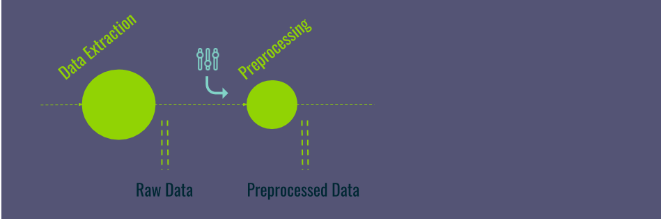
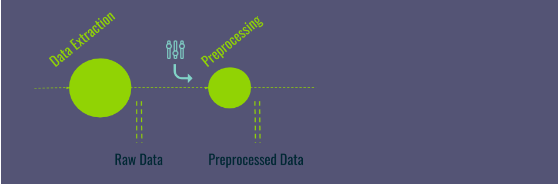
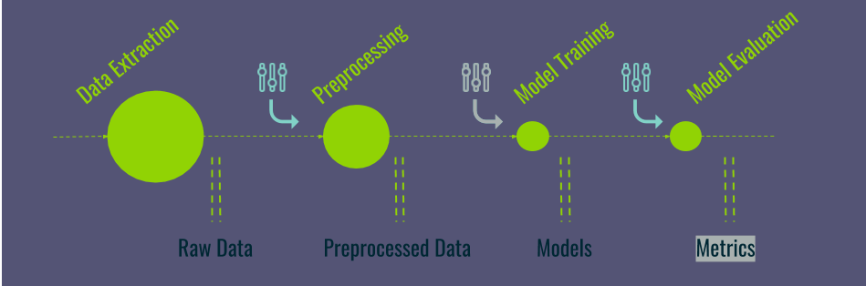
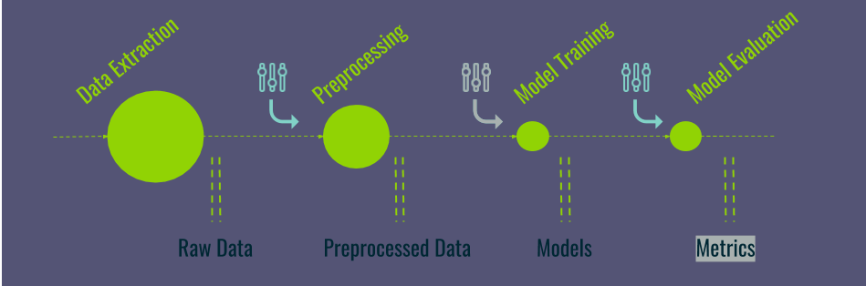

DVC - Data Version Control
Open-source Version Control System for Machine Learning Projects
"For data scientists, by data scientists"
├── raw_data.csv
├── cleaned_data.csv
├── cleaned_data_final.csv
├── cleaned_data_preprocessed_final.csv
└── cleaned_data_preprocessed_final2.csv
Input versionning
├── raw_data.csv mar 8 12:17
└── preprocessed_data.csv feb 26 13:24
Execution order & dependencies
"For data scientists, by data scientists"


 


Save all intermediate results: Metadata + data

 


dvc repro evaluate.dvcdvc repro evaluate.dvc
dvc repro evaluate.dvcdvc repro evaluate.dvcdvc repro evaluate.dvcDo not re-run time consuming tasks
dvc run -d [input_dep] -o [output] [command]
[Tutorial time]
Clone MLV-tools tutorial repository
Resources:
cd mlv-tools-tutorial/resources/dvc_playground
How to:
mlv-tools-tutorial/tutorial/dvc_playground.md